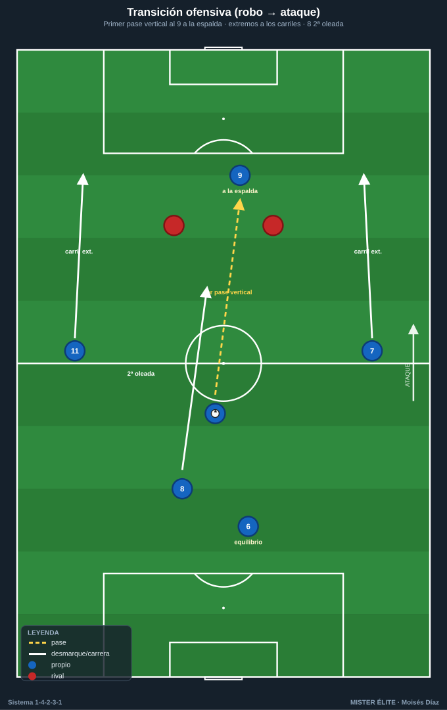
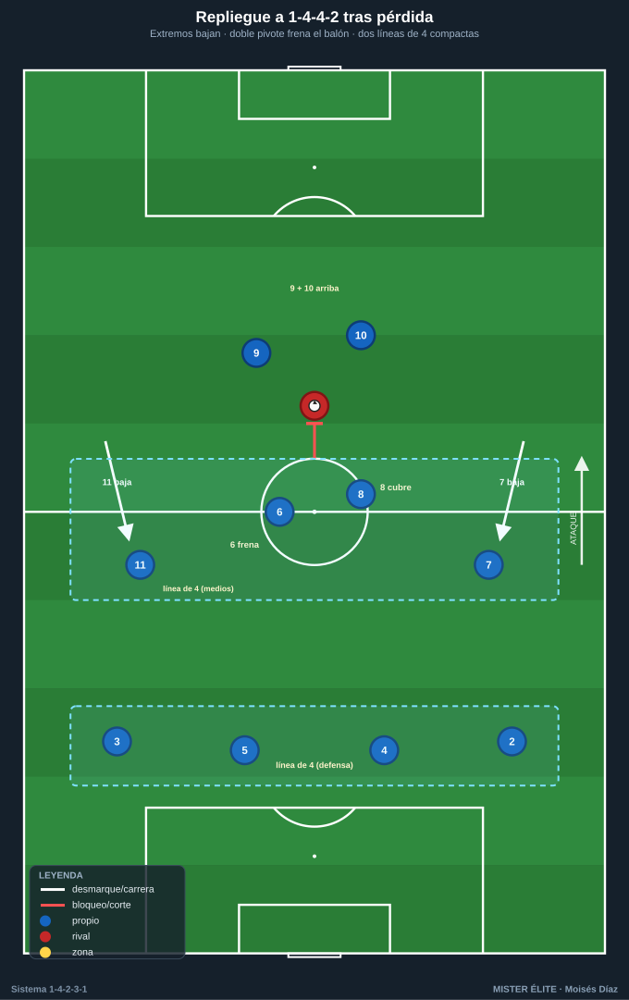
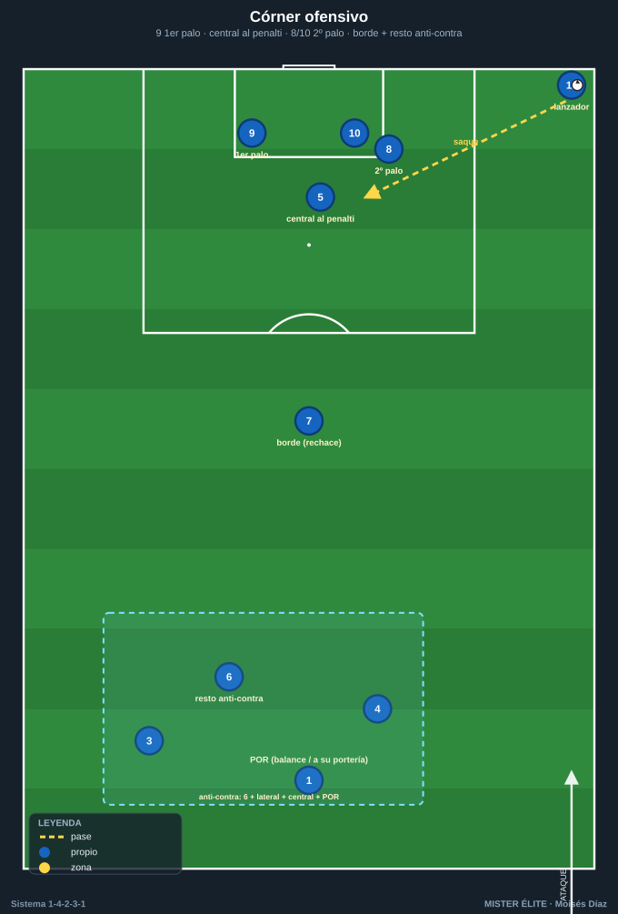

Módulo 04 · Transiciones y balón parado
Las dos transiciones se deciden por la estructura previa. Un buen resto de pérdida (el 6 de pivote + central + lateral del lado contrario equilibrados) es lo que permite contrapresionar o replegar con orden. Mala ocupación de carriles en ataque = transición defensiva mal cubierta.
Los partidos se ganan en los momentos de cambio de posesión. Este módulo cierra la teoría con las dos transiciones (ofensiva y defensiva), el repliegue a 1-4-4-2 y un protocolo de balón parado con roles fijos.
1. Transición ofensiva (robo → ataque) — contraataque
Vías de ataque rápido
- El 9 ataca la profundidad a la espalda de la defensa (primera opción).
- Los extremos (7/11) corren los carriles exteriores en carrera.
- El 10 conduce o da el último pase desde el carril interior.
Principios
- Primer pase hacia adelante buscando al 9 o al extremo en carrera antes de que el rival se reorganice. Si no hay vía directa, el 10 conduce para fijar y abrir la contra a banda.
- Apoyos: el 8 acompaña por dentro como segunda oleada y para el remate de segunda línea; el 6 y la línea controlan el equilibrio.
- Regla de los 3-5 segundos: aprovechar la desorganización inmediata; si no hay ventaja clara en pocos segundos, asegurar y pasar a construcción.

2. Transición defensiva (pérdida → repliegue) — 1-4-2-3-1 → 1-4-4-2
Reacción inmediata (contrapresión)
Los jugadores cercanos al balón (a menudo 8, 10, 9 y el extremo del lado) presionan al portador en bloque durante los primeros segundos para recuperar arriba o forzar el pase malo. La densidad central del sistema favorece este robo inmediato.
Si no se recupera → repliegue ordenado a 1-4-4-2
- Los extremos (7 y 11) bajan a formar la línea de 4 del medio junto al doble pivote.
- El doble pivote (6/8) frena el balón en el centro (uno retrasa al portador, el otro cubre el carril central).
- El 9 y el 10 forman la primera línea de 2 (1-4-4-2) o el 10 baja junto al 6/8 → 1-4-4-1-1 (tapando al pivote rival).
- Laterales (2/3) recuperan su altura; la línea de 4 atrás se mantiene compacta.
Prioridades del repliegue
- Proteger el carril central y la zona delante del área.
- Achicar y juntar líneas (no más de ~10–12 m entre líneas).
- Orientar el juego rival a la banda para presionar donde la línea de cal ayuda como defensor extra.

Coaching transiciones: el resto de pérdida preparado en ataque (6 + central + lateral del lado contrario) es lo que permite elegir entre contrapresionar o replegar con orden. La forma se cambia corriendo, no andando.
3. Balón parado (ABP)
Córners ofensivos
- Lanzador: extremo o mediapunta con buen golpeo (saque cerrado al primer palo o abierto a penalti).
- Bloque de remate (3-4): 9 al primer palo · central que sube (4/5) al punto de penalti · 8/10 al segundo palo. Bloqueos/cortinas para liberar al rematador principal; arranque desde fuera del área hacia dentro.
- Rechace: 1 jugador (10 u 8) al borde del área.
- Resto defensivo (anti-contra): el 6, un lateral y un central atrás (mínimo 2-3 + portero).
- Variante: córner en corto (extremo + lateral) para cambiar el ángulo y desordenar el marcaje zonal.

Córners defensivos
- Mixto (zona + hombre): 2-3 en zona (primer palo, corazón del área, segundo palo) + marcajes al hombre sobre los rematadores peligrosos.
- Postes según plan; 9 arriba como referencia para la salida en contra.
- Tras despejar, 9 + un extremo son la vía de contraataque inmediato.
Faltas
- Laterales (centros): misma estructura de ocupación que el córner.
- Directas a portería: barrera según distancia (POR organiza); rematadores y lanzador definidos; resto de equilibrio siempre.
- Faltas cercanas en ataque: jugadas ensayadas (pared, pase a la espalda de la barrera para el 9/extremo).
Saques
- De banda en campo propio: apoyar para mantener (pivote 6 o central); nunca forzar en zona de riesgo.
- De banda en campo rival: lanzamiento largo al área (si hay rematador) o combinación banda (extremo-lateral-10).
- De puerta (POR): salida en 2/3, jugada en corto preferente; largo al 9 como recurso.
Coaching ABP: definir roles fijos (lanzador, rematadores, jugadores de rechace, resto anti-contra) y ensayar 2-3 jugadas por situación. El resto defensivo en ABP ofensivo no es negociable — es la principal fuente de goles en contra.
Ideas clave
- Transición ofensiva en 3-5 s: profundidad por el 9/extremos o asegurar; el 10 conduce si no hay vía directa.
- Transición defensiva: contrapresión 5" y, si falla, repliegue a 1-4-4-2 (extremos bajan, doble pivote frena).
- El resto de pérdida decide qué transición se puede ejecutar: se prepara en ataque, no en la pérdida.
- ABP con roles fijos y resto anti-contra obligatorio en todo balón parado ofensivo.
Errores comunes
- Primer pase atrás tras recuperar: ralentiza la contra y se pierde la desorganización rival.
- No frenar el balón en la pérdida: el rival progresa por el centro antes de que se forme el bloque.
- Extremos que no bajan al replegar: la línea de medios queda de 2, no de 4.
- ABP sin resto defensivo: conceder la contra es la forma más cara de encajar.